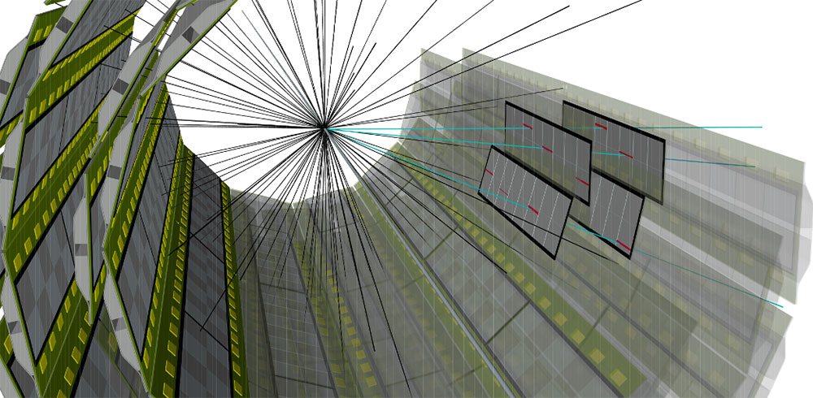
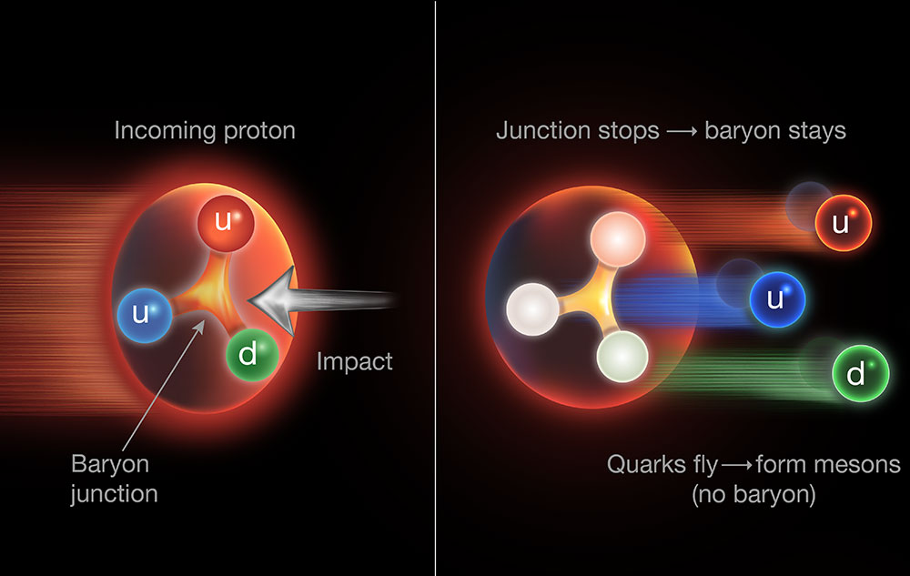
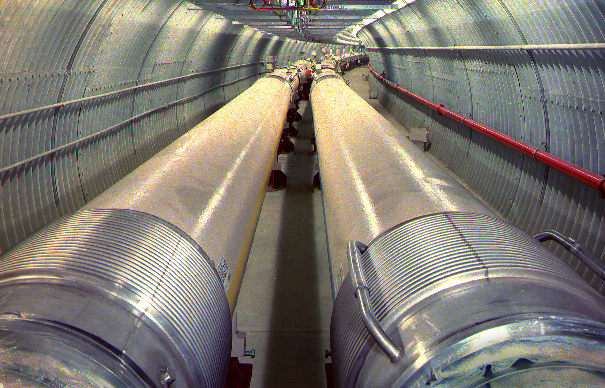
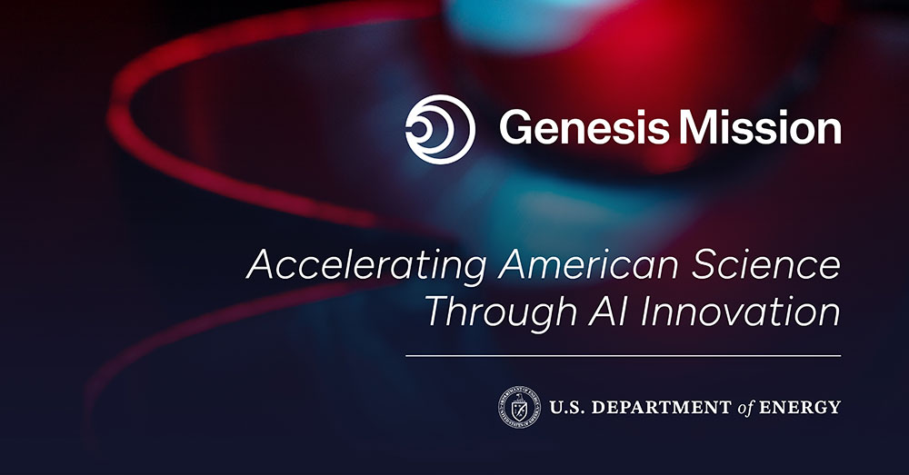
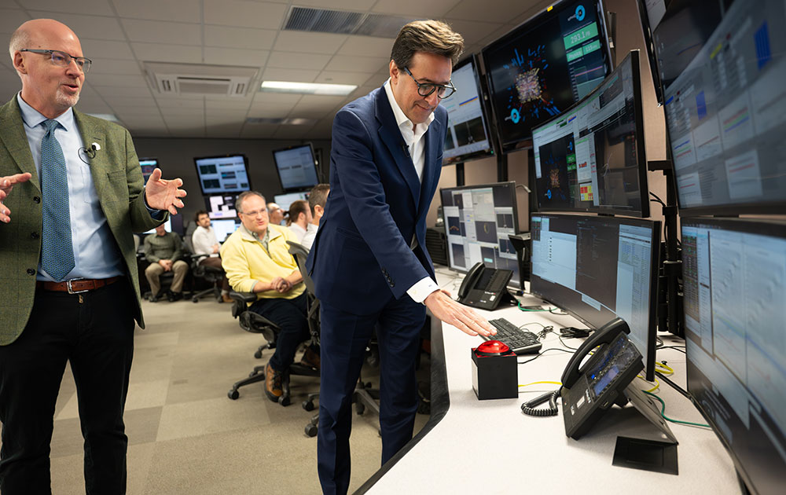
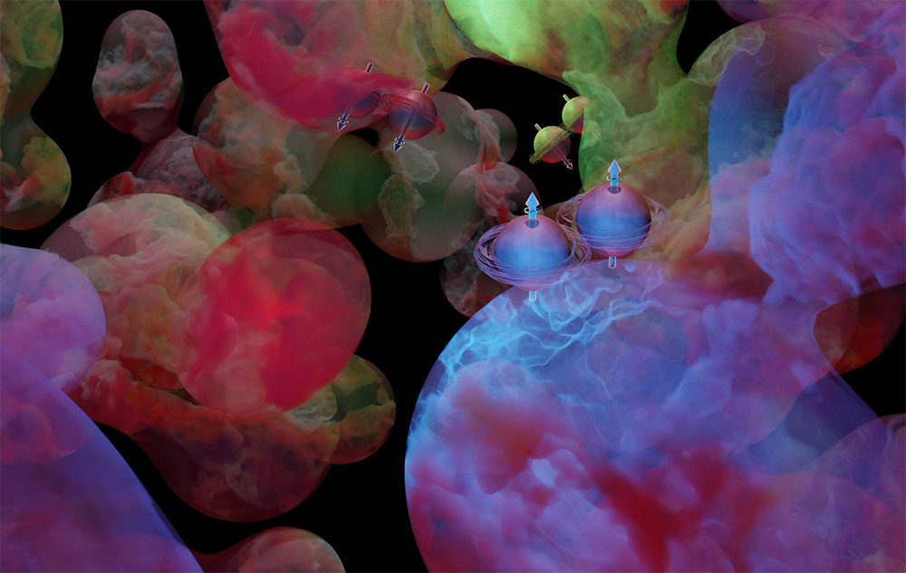
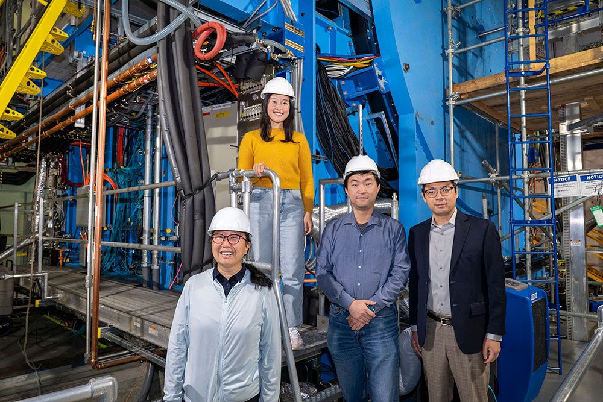
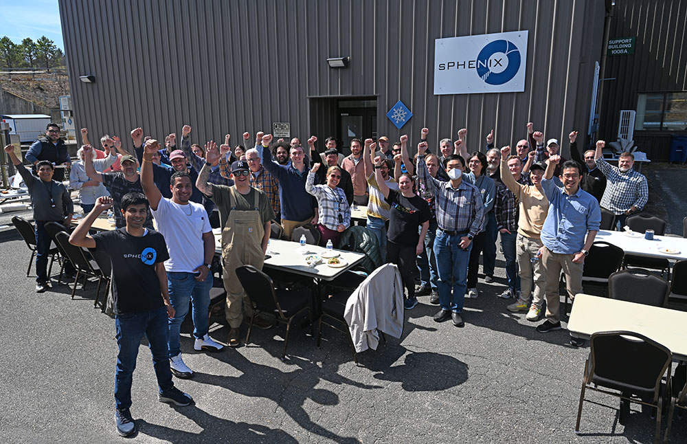

QGP, jets & photons
Use jets, photons, charged particles, and transverse energy to map how energetic probes interact with quark-gluon plasma.
Experimental QCD · Brookhaven National Laboratory
Turning nuclear-collision data at RHIC into discoveries about protons, nuclei, and quark-gluon plasma—powered by the data analysis pipeline that makes discovery possible.
Final oxygen-ion collision displays: sPHENIX and STAR Collaborations · BNL Newsroom
Our mission
The RHIC Analysis Group carries out DOE Office of Nuclear Physics Experimental QCD research using STAR, sPHENIX, and PHENIX data.
We connect detector expertise, precision measurement, theory-informed interpretation, and advanced computing to investigate how quarks and gluons organize into the matter we see—and how they behaved in the early universe.
Jin Huang leads the group and serves as sPHENIX Co-Spokesperson. Aihong Tang, Deputy Group Leader, focuses on the STAR component of group operations.

The group
A multidisciplinary team spanning analysis leadership, detector expertise, computing, AI, data preservation, and the mentorship that sustains RHIC science.
Research portfolio
Select a theme to open its recent publication trail.
Use jets, photons, charged particles, and transverse energy to map how energetic probes interact with quark-gluon plasma.
Track sequential suppression and heavy-flavor production to measure the temperature and transport properties of QCD matter.
Test how baryon number moves through nuclear collisions and where collective behavior emerges in compact systems.
Probe gluon imaging, quantum correlations, vorticity, and possible signatures of the chiral magnetic effect.
Convert complex detector signals into analysis-ready datasets with validated instrumentation, simulation, and production workflows.
Develop foundation models, neural compression, generative analysis, and persistent data systems for discovery at scale.
Selected output · Aug 2025–Aug 2026
Explore the group’s recent journal articles, conference work, and preprints by research theme. Each title links to the publication record.
From the BNL Newsroom
Recent stories span STAR and sPHENIX discoveries, RHIC’s final collisions and transition, and AI initiatives involving members of the group.

STAR results challenge the valence-quark-only picture and strengthen the case for a gluonic baryon-junction mechanism.
Read at BNL Newsroom ↗
RHIC infrastructure and scientific experience become the foundation for the next collider era at Brookhaven.
Read at BNL Newsroom ↗
Group members contribute to four selected Genesis Phase-1 projects connecting AI with nuclear and particle physics.
Read at BNL Newsroom ↗
The 25-year experimental program closes with its largest datasets—and years of analysis and discovery still ahead.
Read at BNL Newsroom ↗
Spin correlations in STAR data reveal how virtual quark-antiquark pairs can leave measurable traces in visible matter.
Read at BNL Newsroom ↗
A neural compression method adapts to sparse detector data so more collision events can be saved for discovery.
Read at BNL Newsroom ↗
Charged-particle and energy-density measurements establish the foundation for a new era of QGP precision.
Read at BNL Newsroom ↗RHIC Analysis Group · Experimental QCD
This site is a public-facing presentation of the group’s FY 2026 continuation-report content.
Publication trail
Open full library ↓